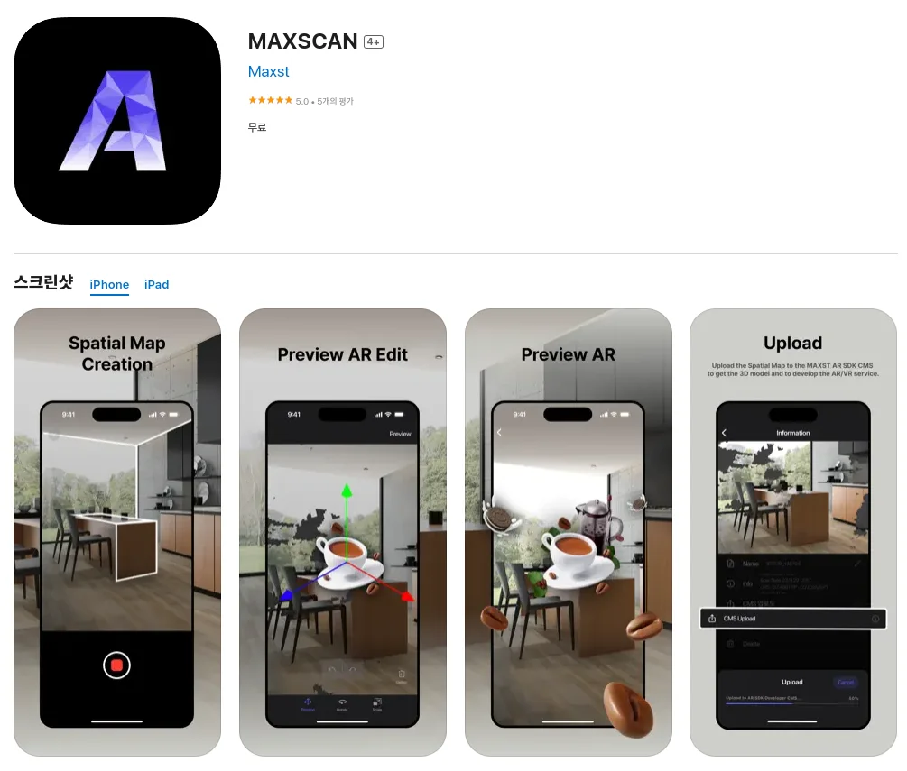
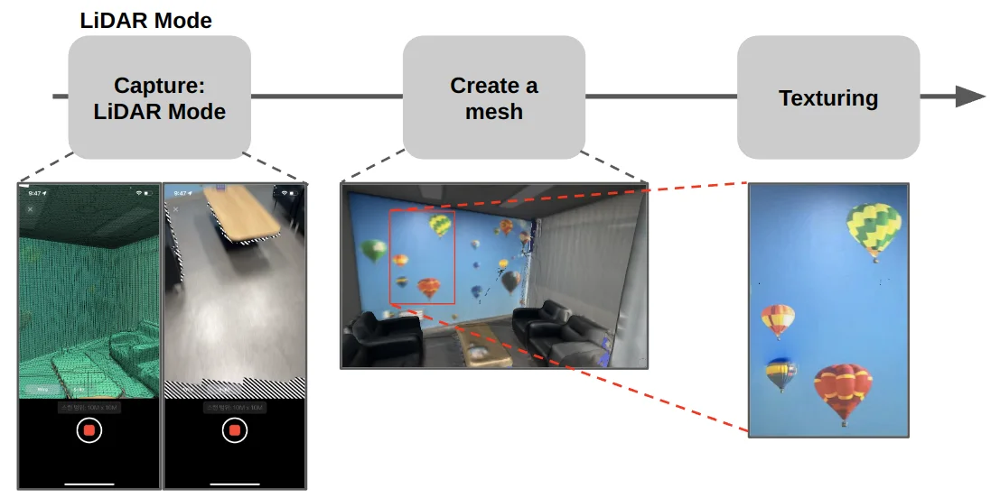
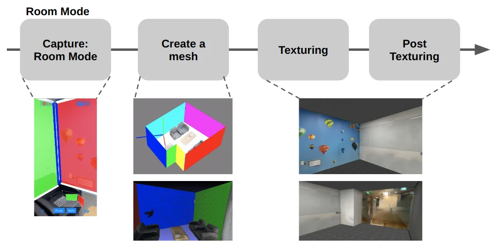
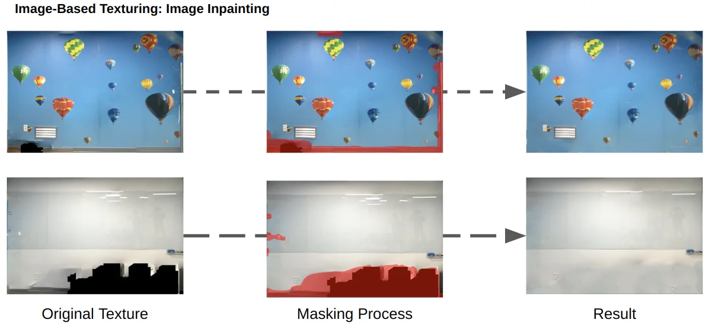
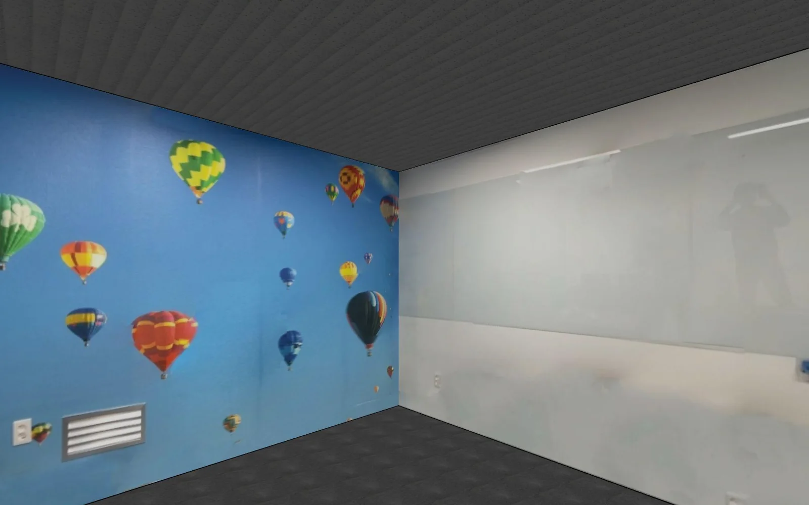
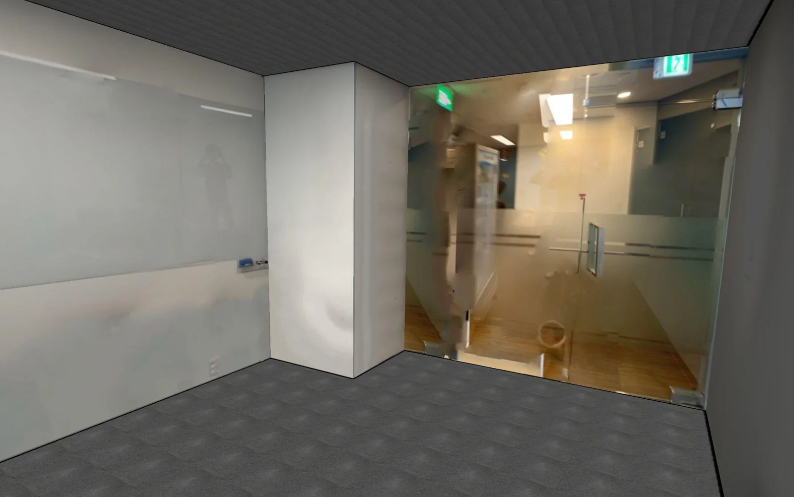
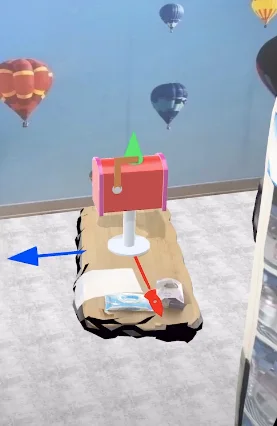
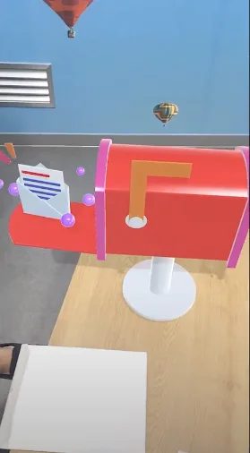

MAXST · Industry project · iOS
MAXSCAN: Scanning Your Space Using Everyday Devices
An iOS app that turns an iPhone or iPad into a 3D scanner: capture an object or a room, build a mesh, texture it from high-resolution images, and track it for augmented reality.
- Organization
- MAXST, Seoul
- Role
- Team lead & project manager
- Platform
- iOS / iPadOS with LiDAR, released on the App Store
- Topics
- Mobile 3D reconstruction, room layout, texturing, inpainting, AR
Overview
Two ways to capture a space.
MAXSCAN offers a LiDAR mode for objects and arbitrary spaces and a Room mode for structured indoor rooms. Both go from capture to mesh to texture on the device, and the result can be tracked in AR.

LiDAR mode
Complete scans, then sharp textures.
During capture, the interface offers two visualizations: scanned areas drawn in green, or unscanned areas drawn as stripes. Both help the user cover the space fully and get a complete, hole-free mesh. The generated mesh is first vertex-coloured, which looks blurry.
The texturing step replaces vertex colours with image texture. Each triangle face acts as a canvas onto which part of a high-resolution image is projected, so the result closely matches the real appearance of the object or space.

Room mode
Layout and mesh together.
Room mode returns both the layout and the mesh of a room. The capture interface also visualizes the room layout as it is reconstructed, so the user can follow its progress in real time. After capture, the mesh is processed to integrate the detected walls with the object meshes, and then textured.
Because the room is described by its walls, the textured mesh can be split into planes. Each 3D plane can then be treated as a 2D image, so standard image processing such as inpainting and super-resolution applies directly. This idea was developed further in RoomRecon (IEEE ISMAR 2024).

Post-texturing
Improving each wall after texturing.
Room mode adds a post-texturing step with three modes for each wall:
- Image mode: fill a wall with an image, optionally refined with inpainting.
- Sample mode: repeat a selected sample, such as a brick pattern, across the wall for a consistent finish.
- Plain-colour mode: paint the wall in a single colour.
Inpainting fills regions that no image captured, such as a wall hidden behind a cabinet or sofa, and removes unwanted content. The user masks the missing and undesired regions, and the wall image is completed.

Results
A complete, realistic room model.
In the final model, the floor and ceiling are textured with the sample-based mode and the walls are refined with inpainting.


Applications
From the scanned room to mixed reality.
Because the scanned room can be tracked, content placed in the virtual replica appears at the same spot in the real room. In the example below, a virtual mailbox is placed in the reconstructed room and then viewed in place through AR.


Accurate, textured room models support virtual property tours and home staging, interior design planning, letting shoppers place furniture before buying, AR games that use the player’s surroundings, and virtual field trips and labs in education.